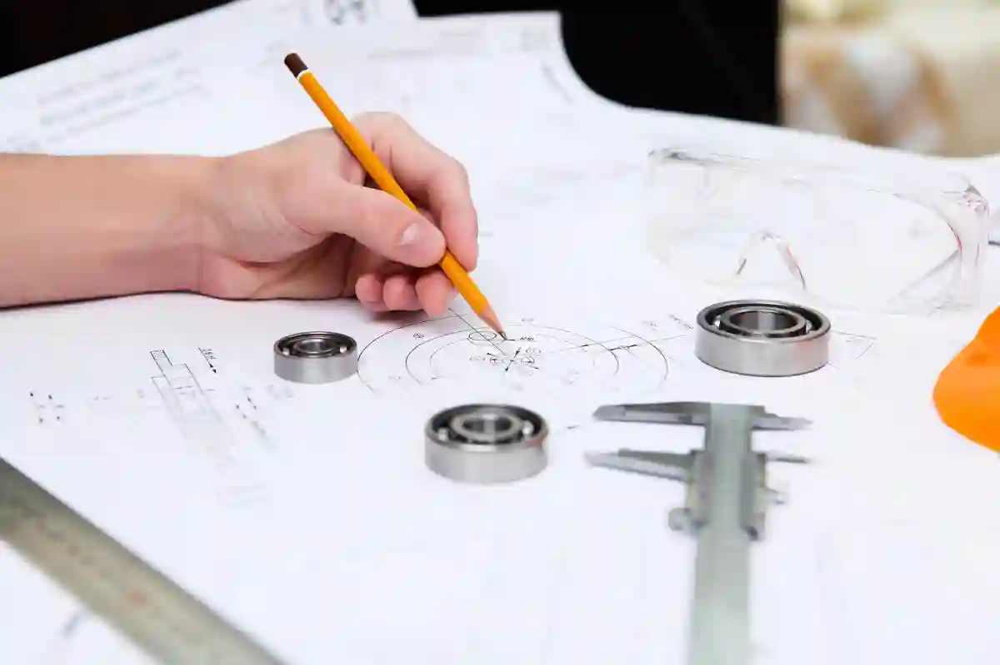
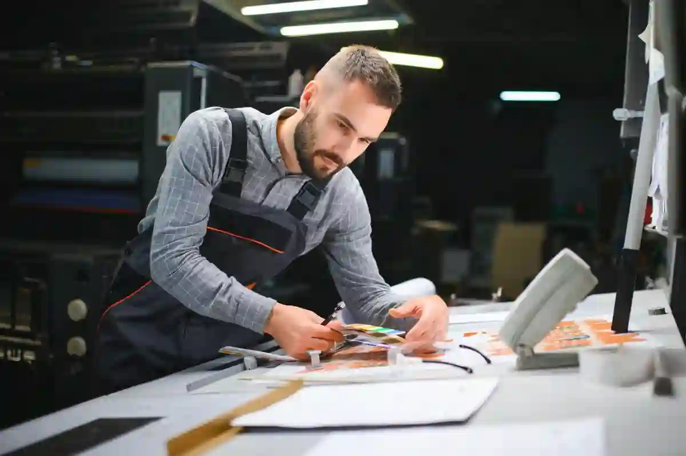

CNC Üretim Süreçleri Neden Doğru Planlanmalıdır?
CNC tabanlı imalat yapıları, yalnızca parçanın işlenmesiyle sınırlı olmayan; tasarımdan teslimata kadar uzanan çok katmanlı bir üretim disiplinidir. Bu nedenle bu tür üretim organizasyonları plansız kurgulandığında, zaman kaybı, tolerans hataları ve maliyet sapmaları gibi ciddi sonuçlar doğurur.
Modern imalat ortamlarında cnc üretim planlaması, makine parkının kapasitesi, iş sıralaması, takım yönetimi ve kalite kontrol adımlarının entegre biçimde ele alınmasını gerektirir. Özellikle çok operasyonlu parçaların üretiminde süreçler arası uyum sağlanmadığında, üretim hattında darboğazlar oluşur.
Burada kritik olan nokta; üretimi yalnızca “makine çalıştırma” olarak değil, cnc üretimde proses yönetimi bakış açısıyla değerlendirmektir. Bu yaklaşım, iş emrinin alınmasından son ölçüme kadar tüm adımların kontrol altında tutulmasını sağlar.
Bu kapsamda CNC planlaması;
- İşlenecek malzeme türü
- Parça geometrisi ve toleranslar
- Makine tipi ve bağlama düzeni
- Operasyon sıralaması
- Ölçüm ve kontrol noktaları
gibi değişkenleri aynı anda yönetmeyi zorunlu kılar.
CNC Üretim Planlaması ile Operasyonel Risklerin Azaltılması

Plansız ilerleyen üretim süreçlerinde en sık karşılaşılan problem, operasyonların birbirini desteklememesidir. Örneğin ilk bağlamada yapılan küçük bir referans hatası, sonraki tüm işlemleri doğrudan etkileyebilir. Bu noktada cnc üretim planlaması, imalat zinciri içindeki riskleri üretim başlamadan önce görünür kılar.
Doğru planlama sayesinde;
- Takım çakışmaları önceden tespit edilir
- Makine uygunluğu netleşir
- İş sıraları optimize edilir
- Tekrar bağlama ihtiyacı azaltılır
Bu yaklaşım, hem kaliteyi artırır hem de cnc üretimde verimlilik seviyesini yukarı taşır. Özellikle seri üretim ve tekrar eden parçalarda, planlama hatalarının maliyeti geometrik olarak artmaktadır.
CNC Üretim Süreçlerinde Stratejik Yaklaşımın Önemi
Stratejik planlama, üretimi yalnızca bugünün ihtiyaçlarına göre değil, gelecekteki kapasite artışlarına da hazırlıklı hale getirir. Bu noktada cnc üretim aşamaları, modüler ve ölçeklenebilir bir yapı üzerine kurulmalıdır.
Aymaksan Makina gibi üretim altyapısına sahip firmalarda süreç planlaması;
- CNC torna
- CNC freze
- Dik işleme merkezleri
- Ölçüm ve kalite kontrol alanları
arasında dengeli bir iş akışı oluşturacak şekilde kurgulanır. Bu yapı, üretim yoğunluğu arttığında dahi teslim sürelerinin kontrol altında tutulmasını sağlar.
CNC Üretim Akış Şeması Planlamaya Nasıl Katkı Sağlar?
CNC üretim akış şeması, teorik planlamanın sahaya aktarılmasını sağlayan en kritik araçlardan biridir. Bu şema, operasyon sırasını görselleştirerek hem üretim ekibinin hem de mühendislik biriminin aynı dili konuşmasını sağlar.
Akış şeması oluşturulurken;
- Operasyon sıraları
- Makine geçişleri
- Kontrol noktaları
- Alternatif işlem senaryoları
net biçimde tanımlanır. Bu yapı, özellikle termin baskısı olan işlerde karar alma sürecini hızlandırır.
Bu noktada üretim süreçlerinin, Makine Parkı yapısına uygun biçimde optimize edilmesi gerekir. Farklı kapasiteye sahip makinelerin tek hatta yığılması, planlama hatalarının başlıca nedenlerinden biridir.
CNC Üretim Aşamaları Nasıl Yapılandırılmalıdır?

CNC üretimdeki aşamalar, bir parçanın ham malzemeden nihai ürüne dönüşüm yolculuğunu tanımlar. Bu aşamaların doğru sıralanmaması, en gelişmiş makine parkında dahi ciddi kalite ve zaman problemlerine neden olur. Bu nedenle cnc üretim süreçleri, parça geometrisine ve tolerans gereksinimlerine göre bilinçli biçimde bölümlendirilmelidir.
Genel olarak CNC üretim;
- Ön hazırlık ve iş emri oluşturma
- Programlama ve simülasyon
- İlk bağlama ve kaba işleme
- Ara işlemler ve hassas operasyonlar
- Son ölçüm ve kalite kontrol
adımlarından oluşur. Ancak bu sıralama her parça için sabit değildir. Özellikle çok yüzeyli veya sıkı toleranslı parçalarda, cnc üretim aşamaları özel olarak yeniden kurgulanmalıdır.
Buradaki temel amaç, parçayı mümkün olan en az bağlama ile, en stabil geometri üzerinden işleyebilmektir. Bu yaklaşım hem ölçüsel tutarlılığı artırır hem de cnc üretimde randımanlık seviyesini yükseltir.
CNC Üretimde Ön Hazırlık ve İş Emri Planlaması
Üretim sürecinin en kritik ama çoğu zaman hafife alınan aşaması ön hazırlıktır. İş emri oluşturulurken yalnızca parça resmi değil; malzeme sertliği, yüzey beklentisi ve teslim tarihi birlikte değerlendirilmelidir.
Bu noktada cnc üretim planlaması, yalnızca üretim mühendisliğinin değil, satın alma ve kalite birimlerinin de dahil olduğu bir süreçtir. Yanlış seçilen ham malzeme veya eksik teknik doküman, üretimin ilerleyen aşamalarında telafisi zor hatalara yol açar.
Ön hazırlık aşamasında;
- Teknik resim doğrulaması
- Tolerans kritik noktaların belirlenmesi
- Uygun makine seçimi
- Operasyon sayısının netleştirilmesi
gibi adımlar tamamlanmalıdır. Bu disiplin, sonraki aşamalarda cnc üretimde proses yönetimi açısından büyük avantaj sağlar.
CNC Programlama ve Simülasyonun Süreçteki Rolü
Programlama aşaması, planlamanın dijital ortama aktarıldığı noktadır. Burada amaç yalnızca G-code üretmek değil, üretim sürecini sanal ortamda test edebilmektir.
Modern CNC planlamada simülasyon kullanımı;
- Takım çarpışmalarını önler
- Gereksiz takım değişimlerini azaltır
- İşleme süresini optimize eder
Bu yaklaşım, özellikle karmaşık geometrilerde cnc üretim optimizasyonu açısından kritik rol oynar. Simülasyon sayesinde üretim sahasında yaşanabilecek duruşlar daha iş başlamadan elimine edilir.
Bu aşama, CNC Üretim Teknolojileri çatısı altında ele alınan dijitalleşme yaklaşımının sahadaki en net karşılığıdır.
CNC Üretimde Bağlama Stratejileri ve Operasyon Sıralaması
Bağlama stratejisi, CNC üretimde doğruluğun temelidir. Yanlış bağlanan bir parça, en doğru programla dahi hatalı üretilecektir. Bu nedenle cnc üretim süreçleri, bağlama merkezli düşünülmelidir.
Operasyon sıralaması belirlenirken;
- Referans yüzeylerin korunması
- Deformasyon riskinin azaltılması
- Tolerans zincirinin kontrolü
esas alınmalıdır. Genellikle kaba işlemler ilk bağlamada, hassas yüzeyler ise son bağlamada işlenmelidir. Bu yapı, cnc üretim aşamaları arasında mantıksal bir akış oluşturur.
CNC Üretim Akış Şeması ile Operasyonların Netleştirilmesi
CNC üretim akış şeması, planlanan operasyonların sahada doğru uygulanmasını sağlar. Her operasyonun hangi makinede, hangi sırayla ve hangi kontrol noktasıyla yapılacağı bu şema üzerinde net biçimde tanımlanır.
Akış şeması sayesinde;
- Operasyonlar arası geçişler hızlanır
- İnsan kaynaklı hata riski azalır
- Üretim takibi kolaylaşır
Bu yapı, özellikle birden fazla CNC tezgâhının kullanıldığı üretimlerde süreç hakimiyetini artırır. Ayrıca bu yaklaşım, Talaşlı İmalat Süreçleri Nasıl Planlanır? içeriğinde detaylandırılan temel prensiplerle doğrudan örtüşür.
CNC Üretimde Proses Yönetimi Neden Kritik Bir Rol Oynar?
CNC üretimde süreç yönetimi, üretim sürecinin yalnızca başlangıç ve bitiş noktalarını değil, bu iki nokta arasındaki tüm operasyonel adımları kontrol altına almayı amaçlar. Doğru kurgulanmamış prosesler, makine parkı ne kadar güçlü olursa olsun sürdürülebilir kalite üretimini engeller.
Bu bağlamda cnc üretim süreçleri, planlama aşamasında belirlenen operasyonların sahada aynı disiplinle uygulanmasını gerektirir. Proses yönetimi; işleme parametreleri, takım ömürleri, bağlama tekrarlanabilirliği ve ölçüm sıklığı gibi değişkenleri kapsar.
Üretimde proses odaklı yaklaşım benimsenmediğinde;
- Operasyonlar kişiye bağımlı hale gelir
- Ölçüsel sapmalar artar
- Parça bazlı kalite standardı sağlanamaz
Bu nedenle cnc üretim planı, proses yönetimi ile birlikte ele alınmalıdır. Aksi halde planlama teoride kalır, sahaya yansımaz.
CNC Üretim Süreçlerinde Standartlaştırılmış Operasyon Yönetimi
Standartlaştırma, proses yönetiminin temel taşıdır. Aynı parçanın farklı zamanlarda, farklı operatörler tarafından işlendiğinde aynı sonucu vermesi hedeflenir. Bu noktada cnc üretim aşamaları, dokümante edilmiş iş adımlarıyla desteklenmelidir.
Standart operasyon yapıları sayesinde;
- Operatör hataları minimize edilir
- Eğitim süresi kısalır
- Süreç izlenebilirliği artar
Bu yapı, özellikle orta ve yüksek adetli üretimlerde cnc üretimde verimlilik açısından belirleyici olur. Parça başına geçen süre sabitlenir ve üretim tahminleri daha gerçekçi hale gelir.
CNC Üretimde Ölçüm Noktalarının Prosesle Entegrasyonu
Kalite kontrol, üretimin sonunda yapılan bir faaliyet değil; üretimin ayrılmaz bir parçasıdır. Bu nedenle ölçüm noktaları, cnc üretim akışındaki şema içine entegre edilmelidir.
Ara ölçüm noktaları sayesinde;
- Tolerans dışı sapmalar erken fark edilir
- Hurda riski azaltılır
- Son kontrol yükü hafifler
Bu yaklaşım, proses içinde kalite anlayışını güçlendirir. Özellikle hassas toleranslı parçalarda, ölçüm adımlarının operasyon sırasına göre planlanması cnc üretim optimizasyonu açısından önemli bir avantaj sağlar.
CNC Üretimde Zaman, Kalite ve Süreç Dengesi Nasıl Kurulur?
Üretimde en sık karşılaşılan yanılgılardan biri, hız ile kalite arasında zorunlu bir tercih olduğu düşüncesidir. Oysa doğru proses yönetimi ile bu iki kavram dengelenebilir. CNC üretim süreçleri, bu dengeyi sağlayacak şekilde tasarlanmalıdır.
Zaman baskısı altında yapılan plansız hızlanmalar;
- Takım aşınmasını artırır
- Yüzey kalitesini düşürür
- Ölçüsel stabiliteyi bozar
Buna karşılık, iyi planlanmış cnc üretimde proses yönetimi, üretimi hızlandırırken kaliteyi korumayı mümkün kılar. Bu denge, özellikle teslim süresi kritik projelerde stratejik bir avantaj yaratır.
Bu yaklaşım, CNC Üretimde Termin ve Teslim Süresi Nasıl Yönetilir? başlığı altında detaylandırılan planlama prensiplerinin temelini oluşturur.
CNC Üretimde Süreç İzleme ve Geri Bildirim Mekanizması
Proses yönetimi, statik bir yapı değildir. Üretim sırasında elde edilen verilerle sürekli beslenmesi gerekir. Takım ömürleri, işleme süreleri ve ölçüm sonuçları analiz edilerek süreç güncellenmelidir.
Bu geri bildirim döngüsü sayesinde;
- Gelecek üretimler daha isabetli planlanır
- Süreç hataları tekrar etmez
- Operasyonel öğrenme kurumsallaşır
Bu yapı, cnc üretim süreçlerinin yalnızca bugünü değil, geleceği de optimize etmesini sağlar.
CNC Üretim Optimizasyonu Nedir ve Neden Gereklidir?
CNC üretim optimizasyonu, mevcut üretim kaynaklarının en verimli şekilde kullanılması amacıyla süreçlerin sistematik olarak iyileştirilmesini ifade eder. Bu kavram, yalnızca üretim süresini kısaltmayı değil; kalite, maliyet ve sürdürülebilirlik hedeflerini aynı anda yönetmeyi kapsar.
Doğru kurgulanmamış CNC üretim yapıları, zamanla fark edilmeyen küçük kayıplar üretir. Bu kayıplar; gereksiz takım değişimleri, bekleme süreleri ve tekrar eden ölçüm adımları şeklinde ortaya çıkar. Optimizasyon yaklaşımı, bu görünmeyen kayıpları görünür kılar.
Özellikle rekabetin yüksek olduğu imalat sektöründe, cnc üretimde verimlilik seviyesi doğrudan teklif rekabetçiliğini etkiler. Aynı kaliteyi daha kısa sürede ve daha düşük maliyetle üretebilen firmalar, pazarda avantaj sağlar.
CNC Üretimde Zaman Kaybına Neden Olan Faktörler
Optimizasyonun ilk adımı, zaman kaybı yaratan unsurların doğru tespit edilmesidir. CNC üretimde bu unsurlar genellikle süreç tasarımından kaynaklanır.
En sık karşılaşılan nedenler şunlardır:
- Operasyonlar arası gereksiz makine geçişleri
- Plansız takım değişimleri
- Bağlama tekrarları
- Ölçüm süreçlerinin üretimden kopuk ilerlemesi
Bu noktada cnc üretim planlaması, zaman kaybı yaratan adımları henüz üretim başlamadan elimine etme fırsatı sunar. Planlama ne kadar detaylı yapılırsa, sahadaki kayıp o kadar azalır.
CNC Üretimde Verimlilik Artırma Yaklaşımları
Verimlilik, yalnızca hızla ilgili değildir. Aynı zamanda tekrar edilebilir kalite, düşük hata oranı ve öngörülebilir teslim süreleri ile ilgilidir. Bu nedenle cnc üretimde verimlilik, çok boyutlu bir performans göstergesidir.
Verimliliği artırmak için;
- Operasyon süreleri ölçülmeli
- Takım ömürleri analiz edilmeli
- Programlar revize edilmeli
- Bağlama sistemleri standartlaştırılmalıdır
Bu çalışmalar, cnc üretim aşamaları boyunca elde edilen gerçek verilerle desteklenmelidir. Varsayımlara dayalı optimizasyonlar, kısa vadede fayda sağlasa da uzun vadede sürdürülebilir değildir.
CNC Üretimde Program ve Takım Optimizasyonu
Programlama, verimlilik artışının en hızlı sonuç veren alanlarından biridir. Küçük kod revizyonları veya takım yollarındaki iyileştirmeler, toplam çevrim süresinde ciddi düşüşler sağlayabilir.
Bu kapsamda;
- Boşta ilerleme mesafeleri azaltılır
- Kesme parametreleri stabilize edilir
- Takım sayısı minimize edilir
Bu yaklaşım, cnc üretim optimizasyonu sürecinin teknik temelini oluşturur. Aynı zamanda makine yükünü dengeler ve plansız duruş riskini azaltır.
Bu noktada, üretim süreçlerinin CNC Üretimde Zaman ve Maliyet Optimizasyonu yaklaşımıyla birlikte değerlendirilmesi, daha bütüncül sonuçlar doğurur.
CNC Üretimde Sürekli İyileştirme Kültürü
Optimizasyon tek seferlik bir çalışma değildir. Sürekli iyileştirme anlayışı benimsenmediğinde, elde edilen kazanımlar zamanla kaybolur. Bu nedenle cnc üretim süreçleri, dinamik bir yapı olarak ele alınmalıdır.
Sürekli iyileştirme için;
- Üretim sonrası değerlendirme toplantıları
- Operatör geri bildirimleri
- Ölçüm sonuçlarının analizi
gibi araçlar kullanılır. Bu geri bildirimler, cnc üretimde proses yönetimi ile entegre edildiğinde kalıcı iyileştirmeler sağlanır.
Bu yaklaşım, Japon üretim felsefelerinde sıkça vurgulanan “kaizen” anlayışıyla örtüşür ve modern CNC üretim tesislerinde yaygın olarak uygulanır. Bu konuda genel prensipler, TMMOB Makina Mühendisleri Odası tarafından yayımlanan üretim verimliliği rehberlerinde de ele alınmaktadır.
CNC Üretim Süreçlerinde Veri Odaklı Karar Alma Yaklaşımı
Modern imalat yapılarında CNC üretim yapıları, yalnızca tecrübeye dayalı kararlarla sürdürülebilir biçimde yönetilemez. Artan rekabet, daralan terminler ve yükselen kalite beklentileri, üretim kararlarının ölçülebilir verilere dayanmasını zorunlu kılmaktadır. Bu noktada veri odaklı yaklaşım, sürekli iyileştirmenin temel yapı taşı haline gelir.
Üretim sahasında elde edilen çevrim süreleri, takım ömürleri, duruş nedenleri ve ölçüm sonuçları; doğru analiz edildiğinde cnc üretim planlaması için güçlü bir yol haritası sunar. Örneğin belirli bir operasyonun her partide süre sapması göstermesi, yalnızca operatör farkı değil; bağlama veya takım seçimi kaynaklı bir problem olduğunu gösterebilir. Bu tür çıkarımlar, sezgisel değil veriye dayalıdır.
Veri odaklı yönetim, aynı zamanda cnc üretimde proses yönetimi disiplinini güçlendirir. Süreç içi toplanan veriler sayesinde hangi cnc üretim aşamalarının darboğaz oluşturduğu net biçimde ortaya çıkar. Böylece iyileştirme çalışmaları genelleştirilmiş varsayımlar yerine, gerçek üretim noktalarına odaklanır.
Bu yaklaşımın en büyük katkılarından biri de cnc üretim optimizasyonu çalışmalarının sürdürülebilir hale gelmesidir. Yapılan her iyileştirmenin üretime etkisi ölçülebilir olduğunda, verimlilik artışı tesadüfi değil kontrollü bir sürece dönüşür. Sonuç olarak veri temelli karar alma, cnc üretimde verimlilik hedeflerinin kalıcı biçimde yakalanmasını sağlar.
CNC Üretim Süreçlerinde Termin Yönetimi Nasıl Sağlanır?
Termin yönetimi, üretim başarısının en görünür çıktılarından biridir. CNC tabanlı üretim organizasyonu, ne kadar teknik olarak doğru kurgulanırsa kurgulansın, teslim tarihlerine uyum sağlanamadığında ticari değerini kaybeder. Bu nedenle termin yönetimi, planlamanın ayrılmaz bir parçası olarak ele alınmalıdır.
Etkili bir termin yönetimi için;
- Operasyon süreleri gerçek verilerle hesaplanmalı
- Makine kapasitesi net biçimde tanımlanmalı
- Olası revizyon ve duruş senaryoları hesaba katılmalıdır
Bu yaklaşım, cnc üretim planlaması ile doğrudan ilişkilidir. Planlama aşamasında yapılan iyimser tahminler, sahada telafisi zor gecikmelere neden olabilir. Bu nedenle üretim takvimleri, minimum değil ortalama ve maksimum senaryolar üzerinden oluşturulmalıdır.
Bu yapı, CNC Üretimde Termin ve Teslim Süresi Nasıl Yönetilir? başlığı altında ele alınan prensiplerin sahadaki uygulama karşılığıdır.
CNC Üretimde İş Yükü ve Kapasite Dengesinin Kurulması
Termin sapmalarının en yaygın nedeni, makine kapasitesi ile iş yükü arasındaki dengesizliktir. Aynı anda çok sayıda işin tek hatta yönlendirilmesi, darboğaz oluşmasına yol açar. Bu noktada cnc üretim akış şeması, işlerin dengeli dağıtılmasını sağlayan önemli bir araçtır.
Kapasite planlaması yapılırken;
- Makine türleri
- Günlük efektif çalışma süresi
- Operatör yetkinliği
birlikte değerlendirilmelidir. Bu yaklaşım, cnc üretimde verimlilik ile termin güvenilirliğini aynı anda güçlendirir.
CNC Üretim Süreçlerinde Maliyet Kontrolü
Maliyet, yalnızca ham madde fiyatından ibaret değildir. CNC üretim süreçleri içerisinde maliyet; işleme süresi, takım tüketimi, enerji kullanımı ve hata oranları gibi çok sayıda parametrenin birleşiminden oluşur.
Maliyet kontrolü sağlamak için;
- Operasyon süreleri standardize edilmeli
- Hurda oranları takip edilmeli
- Takım ömürleri kayıt altına alınmalıdır
Bu çalışmalar, cnc üretim iyileştirme faaliyetlerinin finansal karşılığını ortaya koyar. Plansız üretim, kısa vadede hızlı gibi görünse de uzun vadede birim maliyetleri yükseltir.
Bu bağlamda, üretim planlamasının CNC Üretimde Zaman ve Maliyet Optimizasyonu yaklaşımıyla birlikte ele alınması stratejik bir gerekliliktir.
CNC Üretimde Gizli Maliyetlerin Önlenmesi
Gizli maliyetler, çoğu zaman raporlara yansımaz ancak kârlılığı doğrudan etkiler. Yeniden işleme, bekleme süreleri ve plansız duruşlar bu maliyetlerin başlıca kaynaklarıdır.
CNC üretimde proses yönetimi, bu tür maliyetlerin erken tespit edilmesini sağlar. Süreç verilerinin düzenli analiz edilmesi, hangi aşamada kayıp yaşandığını net biçimde ortaya koyar.
CNC Üretim Süreçlerinde Sürdürülebilirlik Yaklaşımı
Günümüzde sürdürülebilirlik, yalnızca çevresel bir kavram değil; aynı zamanda operasyonel sürekliliğin de anahtarıdır. CNC üretim süreçleri, kaynakları verimli kullanan bir yapıya dönüştürüldüğünde hem maliyet avantajı hem de kurumsal itibar sağlar.
Sürdürülebilir CNC üretimi için;
- Enerji tüketimi izlenmeli
- Takım ve malzeme israfı azaltılmalı
- Tekrar edilebilir prosesler oluşturulmalıdır
Bu yaklaşım, uzun vadede cnc üretim aşamalarının daha öngörülebilir ve kontrol edilebilir olmasını sağlar.
Türkiye’de sanayide verimlilik ve sürdürülebilir üretimle ilgili genel çerçeve, T.C. Sanayi ve Teknoloji Bakanlığı web adresinde yayımlanan resmi rehberlerde de ele alınmaktadır.
CNC Üretim Süreçleri Doğru Planlandığında Ne Kazandırır?
Doğru planlanmış cnc üretim yapıları;
- Daha kısa teslim süreleri
- Daha düşük birim maliyet
- Daha yüksek kalite tutarlılığı
sağlar. Bu kazanımlar, yalnızca üretim sahasını değil; satış, tekliflendirme ve müşteri memnuniyetini de doğrudan etkiler.
Üretim süreçlerini stratejik bakış açısıyla ele alan firmalar, rekabetçi pazarlarda daha sürdürülebilir bir konum elde eder. Bu noktada CNC üretim, teknik bir faaliyet olmanın ötesine geçerek bir yönetim disiplinine dönüşür.